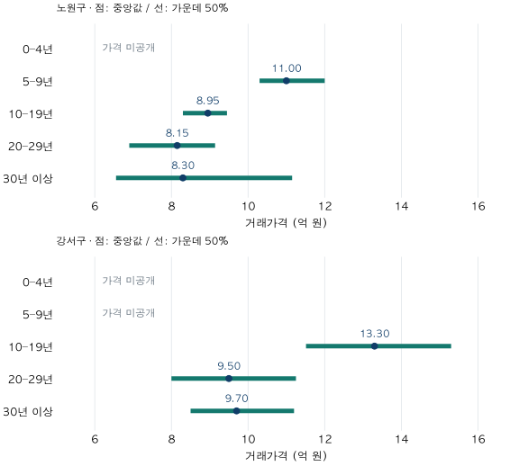

단지 조건 비교 · 연식과 가격 차이
신축 프리미엄, 연식별 아파트 가격표만으로 알 수 있을까?
노원·강서의 2026년 상반기 84㎡ 실거래를 연식별로 비교합니다. 신축 표본이 부족한 칸과 연식별 중앙값 차이, 비교 분모와 입지 혼입을 확인하고 소멸 연도를 단정할 수 없는 이유를 설명합니다.
분석 기간 · 2026년 1~6월 계약 | 보유 자료 스냅샷 생성 · 2026-10-04
신축 아파트에 더 내는 돈은 몇 년이 지나면 사라질까요? 연식별 가격표만으로는 그 해를 정할 수 없습니다. 같은 시기에 거래된 서로 다른 집의 차이이기 때문입니다. 노원·강서의 2026년 상반기 전용84㎡ 이상~85㎡ 미만 매매를 연식별로 나누어, 비교할 수 있는 가격과 아직 알 수 없는 것을 구분합니다.
신축은 몇 년까지이며, 연식은 어떻게 계산하나요?
여기서는 계약연도에서 건축연도를 뺀 값을 연식으로 사용합니다. 2026년 계약이면2022년 건축은4년,2021년 건축은5년입니다. 사용승인일의 월·일이나 입주 기념일을 확인한 만 나이가 아니므로, 실제 거주 기간과 다를 수 있습니다.
연식군은0–4년,5–9년,10–19년,20–29년,30년 이상으로 고정했습니다. 이 글에서 신축은0–4년을 뜻하며,5년은 다음 군에 들어갑니다. 20–29년을 가격 차이의 기준군으로 삼았습니다. 이는 비교를 위한 편집 기준이며 법적 신축·재건축 자격의 기준이 아닙니다.
노원·강서는 기존 첫 집 시리즈의 사례 지역을 이어 사용했습니다. 가격 차이가 큰 구를 골라낸 것이 아닙니다. 기간은2026년1~6월 계약,면적은84.00㎡를 포함하고85.00㎡를 제외합니다. 정확히84.00㎡만의 거래나 공급면적34평 전체와 구분합니다.
같은 구·면적 안에서 연식별 가격은 어떻게 다른가요?
그림의 점은 거래 중앙값,선은 하위25%부터 상위25%까지의 가운데50% 구간입니다. 서로 다른 연식군을 선으로 이어 감가상각 곡선처럼 보이게 하지 않았습니다. 선의 길이는 가격 분포의 폭이며 신뢰구간이나 최저·최고 가격이 아닙니다.

노원구: 신축 가격은 비워 두고, 공개 가능한 군을 비교합니다
| 연식 | 거래 건수 | 거래 단지 수 | 하위25% | 중앙값 | 상위25% |
|---|---|---|---|---|---|
| 0–4년 | 28 | 10개 미만 | 가격 미공개 | 가격 미공개 | 가격 미공개 |
| 5–9년 | 49 | 10개 미만 | 10.30 | 11.00 | 12.00 |
| 10–19년 | 41 | 10개 미만 | 8.30 | 8.95 | 9.45 |
| 20–29년 | 441 | 81 | 6.90 | 8.15 | 9.14 |
| 30년 이상 | 243 | 47 | 6.55 | 8.30 | 11.15 |
좁은 화면에서는 표를 좌우로 움직일 수 있습니다. 거래 건수와 거래가 관측된 단지 수는 다른 분모입니다. ‘10개 미만’은 정확한 단지 수를 공개하지 않는 표시입니다.
노원0–4년은28건으로 가격 공개에 필요한40건에 미달합니다. 5–9년은49건,중앙값11.00억 원입니다. 비교 기준인20–29년은441건,중앙값8.15억 원입니다. 5–9년 결과를0–4년 신축의 가격으로 대신 쓰지 않습니다.
30년 이상 중앙값8.30억 원은20–29년8.15억 원보다 높습니다. 가운데50% 구간도6.55~11.15억 원으로 넓습니다. 이 표는 연식이 증가할 때 가격이 반드시 낮아지는 순서를 보여주지 않습니다. 그렇다고 같은 집이30년을 넘으면 가격이 오르거나 재건축 기대가 얼마라고 확인한 것은 아닙니다.
강서구: 공개 가격과 비공개 건수를 구분합니다
| 연식 | 거래 건수 | 거래 단지 수 | 하위25% | 중앙값 | 상위25% |
|---|---|---|---|---|---|
| 0–4년 | 비공개 | 10개 미만 | 가격 미공개 | 가격 미공개 | 가격 미공개 |
| 5–9년 | 비공개 | 10개 미만 | 가격 미공개 | 가격 미공개 | 가격 미공개 |
| 10–19년 | 비공개 | 37 | 11.51 | 13.30 | 15.30 |
| 20–29년 | 비공개 | 105 | 8.00 | 9.50 | 11.25 |
| 30년 이상 | 비공개 | 23 | 8.50 | 9.70 | 11.20 |
강서에서는0–4년과5–9년 가격을 공개하지 않습니다. 공개 기준은 해당 연식군40건 이상이면서2개 이상 단지이며, 표시된 가격은 모두 이 기준을 충족합니다. 다만 소수 거래가 있는 연식군의 건수가 다른 군과 합계에서 역산되지 않도록,강서의 다섯 연식군 건수를 함께 비공개했습니다.
10–19년 중앙값은13.30억 원,20–29년은9.50억 원,30년 이상은9.70억 원입니다. 10–19년과20–29년은 기간·면적·구가 같아도 서로 다른 동네·단지·층의 거래입니다. 같은 구 안의 동별 가격 구간까지 확인해야 하는 이유입니다.
‘몇 % 더 비싸다’의 분모는 무엇인가요?
각 구의20–29년 중앙값을 분모로 고정합니다. 계산은 차액=비교군 중앙값−기준군 중앙값,비율은 (비교군 중앙값÷기준군 중앙값−1)×100입니다. 지원되는 두 대표값의 차이이며,개별 거래 차액의 중앙값은 아닙니다.
| 비교군 | 중앙값(억 원) | 차액(억 원) | 기준군 대비 |
|---|---|---|---|
| 노원구 5–9년 | 11.00 | +2.85 | +34.97% |
| 노원구 10–19년 | 8.95 | +0.80 | +9.82% |
| 노원구 30년 이상 | 8.30 | +0.15 | +1.84% |
| 강서구 10–19년 | 13.30 | +3.80 | +40.00% |
| 강서구 30년 이상 | 9.70 | +0.20 | +2.11% |
노원5–9년은20–29년보다2.85억 원,34.97% 높습니다. 반대로20–29년이5–9년보다 얼마나 낮은지 물으면 분모가11.00억 원으로 바뀌어25.91% 낮습니다. 같은 차액도 기준을 바꾸면 비율이 달라집니다.
강서10–19년의 차이는3.80억 원,40.00%입니다. 노원5–9년의34.97%와 비교해 “강서의 신축 프리미엄이 더 크다”고 말할 수는 없습니다. 비교 연식군도 다르고,두 구 모두 신축0–4년 가격을 제시하지 않았기 때문입니다.
연식별 가격표로 ‘신축 프리미엄 소멸 연도’를 찾을 수 있나요?
이 집계로는 찾을 수 없습니다. 한 단지가4년,10년,20년이 될 때의 가격을 따라간 표가 아니라,한 반기에 거래된 서로 다른 단지를 묶은 표입니다. 군 사이의 차이에는 건축 시기별 입지·설계·규모·브랜드,층·수리 상태,계약월과 거래 구성의 차이가 함께 들어 있습니다.
가장 강한 반론은 “그래도 같은 구·면적을 맞췄으니 연식 비교가 유용하지 않나”입니다. 맞습니다. 무조건 섞어 비교하는 것보다 조건을 좁힌 출발점입니다. 하지만 같은 구 안에서도 생활권이 다르고,거래가 많은 단지는 집계에서 더 큰 비중을 갖습니다. 40건을 넘었다고 독립된40개 단지나 같은 품질의40채가 확보된 것도 아닙니다. 이 글의 집계는 단지마다 같은 한 표를 주거나 현재 전체 주택 재고로 가중하지 않았습니다.
같은 법정동·가까운 계약월·유사한 층과 규모로 더 좁히면 차이의 크기나 순서가 바뀔 수 있습니다. 동시에 표본이 줄어 가격을 제시할 수 없을 수도 있습니다. 이번 두 구의 결과를 다른 지역·면적·시기나 현재 매물에 그대로 옮기지 않습니다. 오래된 집의 가격이 높아도 사업 진행 단계나 재건축의 법적 자격을 확인한 결과는 아닙니다.
내 신축·구축 후보는 어떤 순서로 비교하면 좋을까요?
- 연식 정의를 맞춥니다. 건축연도 차이인지 사용승인일 기준인지 확인하고,5년 경계처럼 서로 다른 군이 섞이지 않도록 적습니다.
- 먼저 같은 생활권·전용면적·가까운 계약월로 좁힙니다. 거래 층과 규모,수리 상태 등 확인하지 못한 조건도 빈칸으로 남깁니다.
- 가격 옆에 표본을 적습니다. 거래 건수와 거래 단지 수를 구분합니다. 부족한 신축 표본을 다른 연식 가격으로 메우지 않습니다.
- 비교 분모와 추가 비용을 따로 적습니다. 어느 후보 대비 차액인지 명시하고 실제 호가,수리 견적과 이사비는 관측 거래가격과 구별합니다. 연식만으로 정액의 수리비를 가정하지 않습니다.
자료·연식 정의·공개 기준·검증 방법 펼치기
- 원천: 국토교통부 아파트 매매 실거래가 상세 자료의 자체 정제 집계입니다. 국토부의 공식 연식별 가격 통계나 현재 매물 조회가 아닙니다. 현행 단지 마스터의 건축연도를 사용하며 사용승인일은 연결하지 않았습니다.
- 선택과 제외: 기존 사례 지역 두 구,2026년1~6월,84≤전용면적<85㎡를 사전에 정했습니다. 기존 가격 비교 적격 매매 기준을 적용하고 토지임대부를 제외했습니다. 해제·직거래 등 정제 기준은 앞선 동별 비교 글과 같습니다. 데이터 갱신 때 계약과 해제 상태가 수정될 수 있습니다.
- 연식: 계약연도−건축연도입니다. 양의 정수 건축연도만 사용하고 미래연도·누락은 제외 대상으로 검사했습니다. 이번 선택 거래의 연결 누락과 연식 결측은0건입니다. 전체 재고의 연결률이나 수집 완전성을 뜻하지 않습니다.
- 통계와 공개: 거래1건=1표,선형 보간25·50·75분위수입니다. 가격은40건 이상·2개 이상 단지,정확한 건수는10건 이상 기준입니다. 한 연식군에 소수 거래가 있으면 구의 모든 연식군 건수를 함께 숨깁니다. 단지수10개 미만은 구간으로만 표시합니다. 공개 가격 기준은 이 글의 편집 규칙이며 통계적 정확성의 보증이 아닙니다.
- 대조: 관측 테이블·단지 마스터의SQL 집계와 별도 매매 사실 테이블·마스터의Python 연식 분류·분위수를 대조했습니다. 연식군 합계는 앞선 동별 글의 같은 모집단과 일치했습니다. 원천2구×6개월12파일과 마스터 유일성,거래 중복을 확인했습니다. 개별 거래·단지 식별자와 모형 추정가격은 내보내지 않았습니다.
- 시점: 스냅샷 생성일2026-10-04,수록 기준 끝월2026-09. 실제 정보 도착 컷오프는 미상입니다. 기존 동별 비교와 맞춘6월 종료 회고이며6월 말 당시 알 수 있던 자료만의 분석은 아닙니다. 반올림 전 공개 집계JSON에서도 미공개 가격·건수는 비워 두었습니다.
계산·분석·집필: 파파펭귄 (Nobot Kang). 에이전트로 자료 대조·계산·초안 검토를 보조했습니다. 공식 원천 확인일:2026-10-10.